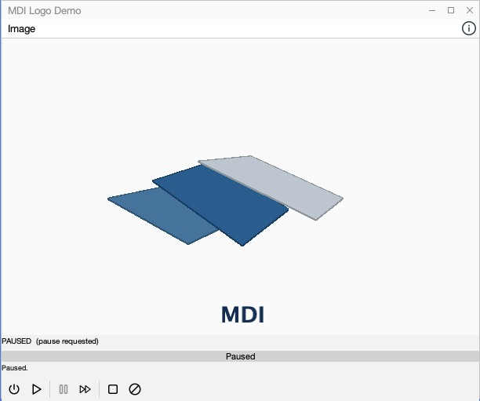
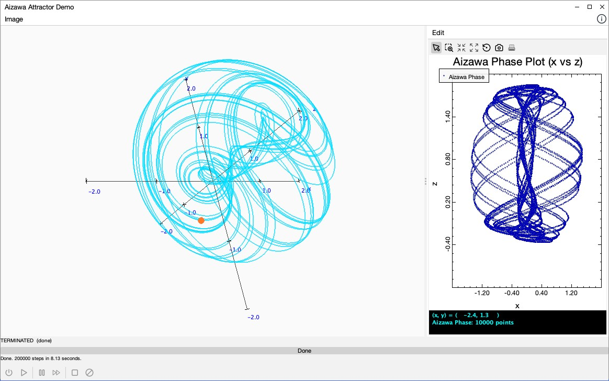
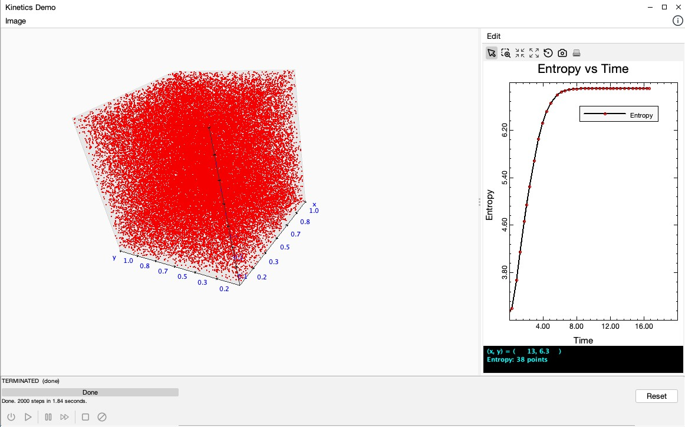
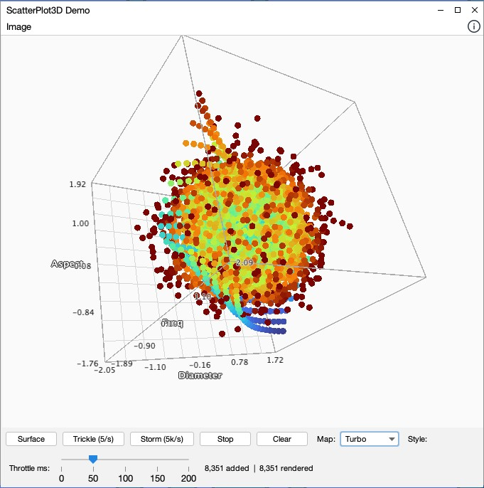
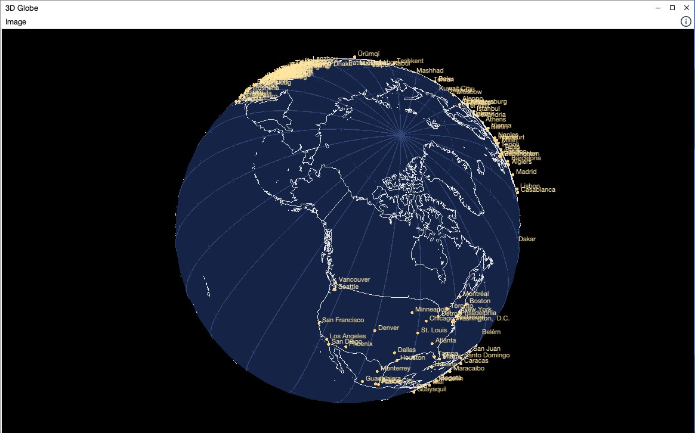

MDI Companion
MDI Companionmdi-3D
A JOGL-based extension that brings three-dimensional visualization into the same application, view, and simulation architecture used throughout the book.
What It Demonstrates
- 3D views (
GLJPanel-based) coexisting with ordinary 2D MDI views in one application — the demo app includes a plain 2D drawing view alongside its 3D scenes. - Correct threading discipline at the JOGL/Swing boundary: rendering callbacks stay off the EDT except where Swing state is actually touched.
- Optional Phong (
GL_LIGHT0) lighting, opt-in per item viasetLighted(boolean). - Graceful degradation: if OpenGL isn’t available, 3D panels fall back to an explanatory placeholder instead of failing to launch.
- Reuse of core
mdiinfrastructure — image capture/clipboard export, keyboard handling, view-info metadata — rather than reinventing it for 3D.
Demo Views
| View | What it shows |
|---|---|
| Rotating MDI logo | Independently tilting, lit panels with a precessing rotation axis |
| Aizawa attractor | A chaotic strange-attractor simulation rendered as an evolving 3D trajectory |
| Kinetics demo | A live simulation driving 3D geometry via SimulationEngine |
| Scatter plot 3D | 3D point-cloud rendering, including lit-sphere point markers |
| Geometry slice | Interactive cross-sections through a 3D solid |
| Globe | A lazily-loaded 3D globe view |
| 2D drawing view | An ordinary 2D DrawingView, included to show 2D and 3D coexisting |
Keyboard Controls
3D views use a consistent key binding scheme (rotation, reset, refresh) routed through a
single KeyAdapter3D/KeyBindings3D pair — see the project
README for the full list.
Gallery
Screenshots of the demo application's 3D views.
{kind=link}

{kind=link}

{kind=link}

SimulationEngine-driven particle system in a 3D box, with entropy tracked over time.{kind=link}

{kind=link}

Try It
git clone https://github.com/heddle/mdi-3D.git
cd mdi-3D
mvn install
mvn exec:java -Dexec.mainClass=edu.cnu.mdi.mdi3D.app.DemoApp3DMaven Coordinates
Targeting a v1.1.0 release on Maven Central (io.github.heddle:mdi-3d) close to
publication; check Maven
Central for the currently released version.